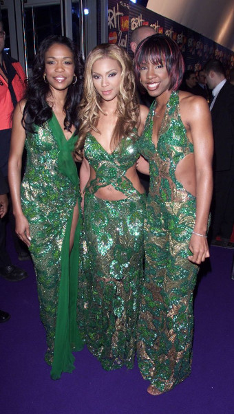

Biografia
Destiny's Child foi um grupo vocal feminino americano de R&B, cuja formação final e mais conhecida incluía as cantoras Beyoncé, Kelly Rowland e Michelle Williams. Formado em 1997 em Houston, Texas, as integrantes do Destiny's Child começaram sua carreira musical em 1990, pertencendo a um grupo musical intitulando Girl's Tyme, que incluía em sua formação Beyoncé, Kelly, LaTavia Roberson e LeToya Luckett, entre outras. Após anos de busca por um contrato de gravação, o quarteto assinou com a Columbia Records em 1997, sob o nome de Destiny's Child. O grupo ganhou maior reconhecimento comercial após o lançamento de seu segundo álbum de estúdio, The Writing's on the Wall (1999), que continha os singles número um na Billboard 100: "Bills, Bills, Bills" e "Say My Name". Apesar do sucesso crítico e comercial, o Destiny's Child foi afetado por conflitos internos e turbulências judiciais, quando as integrantes Roberson e Luckett tentaram separar o grupo do seu gerenciador, Mathew Knowles, alegando que ele possuía um favoritismo injusto por Beyoncé e Rowland.
Em termos de estilo musical o Destiny's Child é por vezes classificado como um grupo de R&B e música pop, incluindo outros gêneros recorrentes como urbano contemporâneo e dance-pop.
Discografia
Destiny's Child
É o primeiro álbum de estúdio dogrupo americano de R&B de mesmo nome , lançado pela Ruffhouse , Columbia Records e Music World Entertainment em 17 de fevereiro de 1998. Contém os singles " No, No, No " e " With Me ", ambos dos quais precederam o álbum. "Killing Time" também foi apresentado em " Men in Black: The Album " e lançado como single promocional em 1997. Antes do lançamento, o álbum foi definido para se chamar "Bridges". [4] O álbum passou vinte e seis semanas na parada Billboard 200 dos EUA e alcançou a posição sessenta e sete. Até o momento, o álbum vendeu um total de 831.000 cópias na América. No Reino Unido, alcançou o top cinquenta, chegando ao número quarenta e cinco. Foi reembalado e relançado em vários países após o sucesso do álbum seguinte, The Writing's on the Wall (1999). O álbum recebeu críticas geralmente favoráveis de críticos musicais, incluindo AllMusic e Rolling Stone , e ganhou o prêmio Soul Train Lady of Soul de Melhor Álbum de R&B/Soul do Ano.
.jpg "Destiny's Child")
The Writing's on the Wall
É o segundo álbum de estúdio do grupo feminino americano Destiny's Child . Foi lançado em 14 de julho de 1999, pela Columbia Records . Insatisfeitos com seu primeiro álbum de estúdio homônimo de 1998, Destiny's Child buscou a transição do som influenciado pelo neo soul do disco. Conseqüentemente, o grupo assumiu um controle mais criativo e recrutou um conjunto quase totalmente diferente de colaboradores, incluindo Kevin "She'kspere" Briggs , Kandi Burruss , Missy Elliott , Rodney Jerkins e LaShawn Daniels , entre outros. Resultado da mudança artística substancial, The Writing's on the Wall é um disco de R&B , pop , hip hop e soul

Suvivor
É o terceiro álbum de estúdio do grupo feminino americano Destiny's Child . Foi lançado em 25 de abril de 2001, pela Columbia Records . À medida que seu segundo álbum de estúdio The Writing's on the Wall (1999) se tornou um sucesso comercial crescente, Destiny's Child enfrentou a polêmica saída dos membros originais LeToya Luckett e LaTavia Roberson , que foram substituídos por Farrah Franklin e Michelle Williams , em fevereiro de 2000. Logo depois, eles iniciaram a produção de seu terceiro álbum de estúdio, provisoriamente intitulado Independent Women

8 Days of Christmas
É o quarto álbum de estúdio e único álbum de Natal do grupo femininoamericano de R&B Destiny's Child , lançado em 30 de outubro de 2001 pela Columbia Records . O álbum contém doze faixas com canções tradicionais de Natal e três canções originais. A maioria deles é reorganizada com batidasaceleradas em um estilo R&B contemporâneo. O álbum foi gravado no verão de 2001 nos Estados Unidos, mas Kelly Rowland afirmoudurante a estreia do vídeo " 8 Days of Christmas " no BET 's 106 & Park no outono de 2001 que partes do álbum também foram gravadasno Japão durante a turnê internacional do Destiny's Child. passeio promocional. Na mesma entrevista, Beyoncé revelou: “Na verdade,escrevemos a música há dois anos, quando entramos em estúdio para fazer algo de Natal. Foi isso que deu início à ideia de fazer umálbum de Natal”. [1] A música "8 Days of Christmas" apareceu pela primeira vez na reedição em disco duplo de The Writing's on theWall em novembro de 2000.

Destiny Fulfilled
É o quinto e último álbum de estúdio do grupo feminino americano Destiny's Child . Foi lançado em 8 de novembro de 2004, pela Columbia Records e Sony Urban Music . Após a conclusão das atividades promocionais de seu terceiro álbum de estúdio de sucesso mundial, Survivor (2001), Destiny's Child embarcou em um hiato de dois anos, durante o qual cada membro lançou álbuns solo com níveis variados de sucesso. Eles se reuniram no verão de 2004 para gravar Destiny Fulfilled , principalmente no Sony Music Studios em Nova York. Ao contrário das gravações anteriores do grupo, o álbum viu cada membro contribuindo igualmente para a composição e produção, inspirando-se nos acontecimentos de suas vidas enquanto estavam separados.